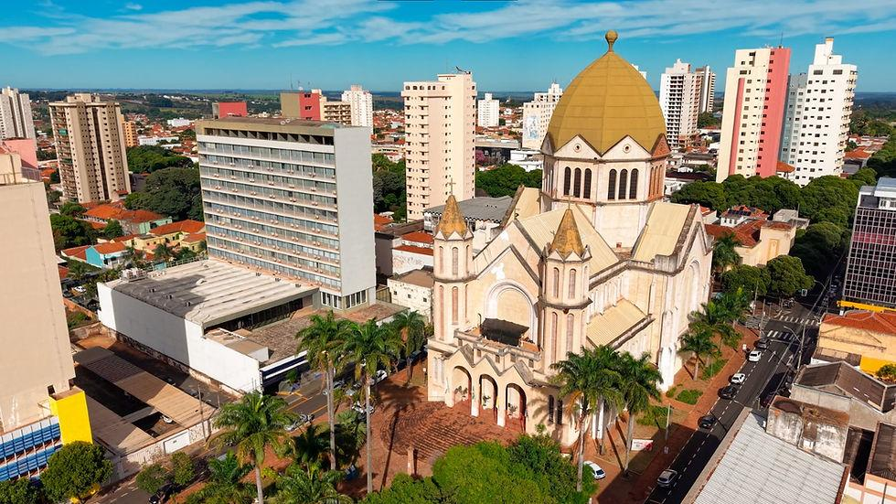

Americana
Americana fica no interior de São Paulo e integra a Região Metropolitana de Campinas. Seu crescimento está ligado à ferrovia e à indústria têxtil. Hoje, a cidade combina comércio, áreas urbanas e espaços de lazer, como o Parque Ecológico Municipal.
Como chegar